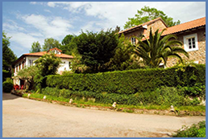
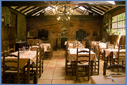
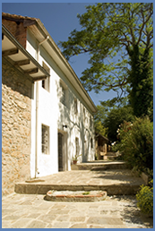

Vista General |
La Posada "La Gandara" esta enclavada en plena naturaleza dominando el valle de Udías y distante de 1km de la aldea más cercana. Es un conjunto de edificios rehabilitados respetando los materiales tradicionales: mamposteria y ladrillo.
En uno están ubicados 9 habitaciones dobles y 2 sencillas, todas con baño, TV, calefacción central y salon social. |

Comedor |
En el tercer edificio, antiguamente parada de postas de los mineros, se encuentra el bar, decorado con viejas fotografias mineras y colección de minerales.
Amplias terrazas, jardines y una bolera montañesa invitan a disfrutar de la tranquilidad y naturaleza, al mismo tiempo es un lugar muy céntrico para descubrir Cantabria, sus montes, costas, parques y cuevas. |

Terraza |